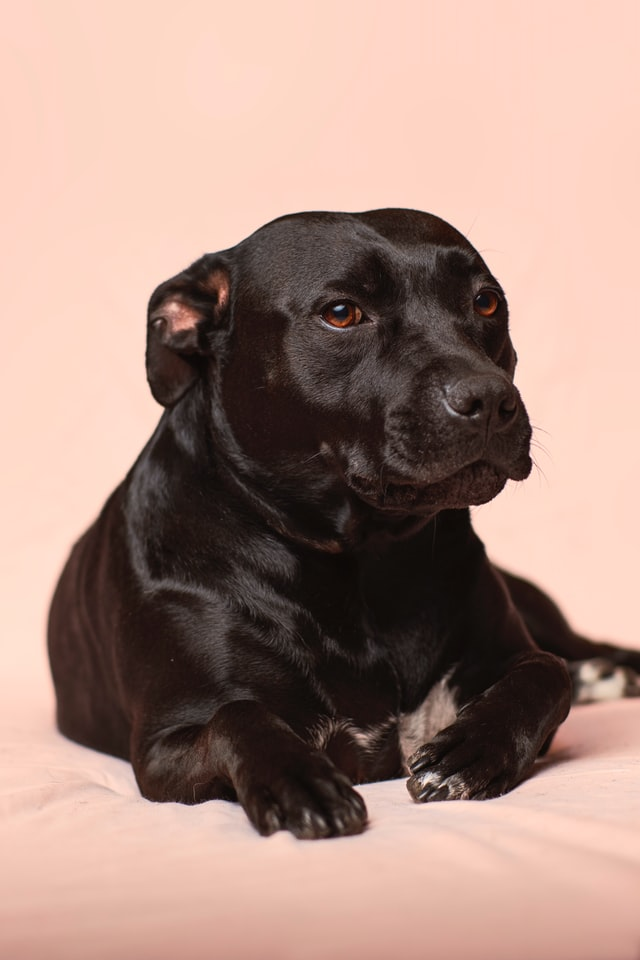

Random Facts Blog
Random Facts About Dogs
(Wo)man's best friend. Always biting your shoes and rubbing themselves against your carpet. You want to be upset, but you really cant, the pros outweigh the cons. All these amazing pups come in many sizes, colors, faces, and personalities. There is a dog for everyone. Want to know more about America's favorite pet? Read more below.
- A dog’s nose print is unique, much like a person’s fingerprint.
- Seventy percent of people sign their dog’s name on their holiday cards.
- Dogs’ noses can sense heat/thermal radiation, which explains why blind or deaf dogs can still hunt.
- Only one breed that was among the five most popular breeds in 1934— the Beagle — still remains in the top five today.
- Dogs curl up in a ball when sleeping to protect their organs—a hold over from their days in the wild, when they were vulnerable to predator attacks.
- Human blood pressure goes down when petting a dog. And so does the dog’s.
- There are over 75 million pet dogs in the U.S.—more than in any other country.
- All puppies are born deaf.
- The Norwegien Lundehund is the least popular dog breed and the only dog breed created for the job of puffin hunting.
- When dogs kick backward after they go to the bathroom it’s not to cover it up, but to mark their territory, using the scent glands in their feet.
About the Author
By Mary Johnson
Writer @ The Big Magazine
Mary has been writing for 20 years. Besides writing Mary enjoys learning, sailing, and long walks on the beach